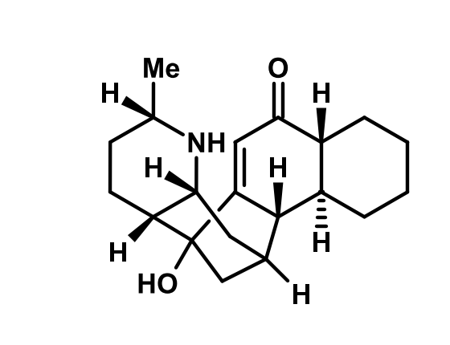

Animate ChemDraw (.cdxml) line art as rotations and bond formations, using the styles and colors of your choice.

The program follows your drawing rather than a molecular model,
so animations look
like what you drew.
An arrow denotes the transformation of one structure to another; an equivalency sign denotes a reorientation of the same molecule. Both play in one clip.
Place a .cif structure carrying 3D coordinates above your drawing; the program supplies the axis and angle. This copy helps reorientation but it is never rendered — only your own drawing moves.
Bonds keep their width, letters stay readable, and the white bond borders cross are recomputed as objects that move.
Solid and hashed wedges, formal charges, stacked labels, subscripts and colors appear as drawn.
When the automatic pairing is not accurate, click an atom on the left and its partner on the right. Bonds that break turn red, bonds that form turn green.
Choose the length, frame rate and pixel width; obtain an animated GIF, an MP4, or a numbered sequence of frames for a figure.
Order and intent come from the drawing itself — no configuration file needed.
One structure becomes the next. Atoms travel, bonds break and form, labels dissolve where a group changes.
The same molecule, drawn another way. Rotation about an axis changes your perspective on a molecule.
Sitting above your drawing, a roughly oriented cif can help the program understand how your structure moves through 3D space.
Four steps, and nothing to configure for a first look.
The first render takes a minute to get going, because your browser is downloading Python and the scientific libraries; it keeps them afterwards. If you would rather work offline, or need MP4, use the download — on a Mac its first launch needs right-click → Open, once only.